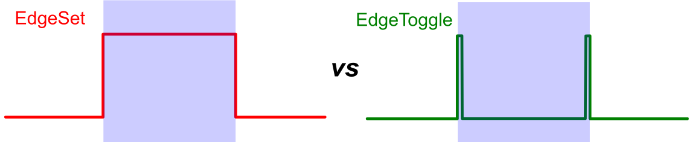

Name of the analog input channel containing the events. The names can vary depending on the number of available channels on the LabeoTech imaging system. For more details, refer to the product user manual.
Events detection for LabeoTech imaging systems.
This function detects events from LabeoTech Imaging system's analog channels (e.g., ai_0000x.bin) and saves the event information to events.mat file in the SaveFolder to be used by other umIT functions.
This function uses the raw analog channels from LabeoTech's imaging systems (i.e. ai_0000x.bin files) and, optionally, a .csv or .txt file containing the list of event names in chronological order located in the same folder.
Note
This function uses the same ressources than the Events Manager tool from the DataViewer app. The main difference here is that the tool allows the user to interactively set the events detection parameters. One can use the tool in a couple of recordings and apply the events detection parameters (see below) to automate the events detection in a pipeline using this function.
Note on CSV files
For those using condition lists stored in .csv files, it is important to note that the events should be listed in chronological order row-wise. If the file contains headers, the header will be concatenated to the each event ID.
For multiple columns, each row will be concatenated resulting in a single unique event name (see examples on Events Manager tool's documentation).
This function creates an events.mat file containing the events detected in the analog channels of LabeoTech imaging systems and saves it in the save folder alongside the .dat files. The events.mat file is used by other functions (e.g. split_data_by_event) to process event-triggered imaging datasets.
Name of the analog input channel containing the events. The names can vary depending on the number of available channels on the LabeoTech imaging system. For more details, refer to the product user manual.
Threshold value for detection of events. If set to auto, the threshold will be set as 80% of the maximum signal amplitude. Otherwise, users can set to any numerical value (in volts).
types of triggers marking the beginning and end of an event. There are two types: EdgeSet (default) and EdgeToggle. The EdgeSet type consists of a rising and falling edges of a pulse marking the beginning and end of an event while the EdgeToggle represents a pulse at the start and another pulse at the end of the event (see illustration below).

Minimum inter-stimulation time period (in seconds). This parameter mainly is used to put together a block of signal bursts as a single event. Set this parameter to a value smaller than the time between the events and larger than the time between bursts.
type of file containing the list of conditions. Set to none, if no condition list is provided. Two types are available:
Name of the file containing the condition list. If set to auto, the function will try to parse all files with the extension set by the ConditionFileType parameter and return the first successful execution. Otherwise, type the name of the file to be parsed.
Name of the column(s) in the .CSV file to generate the event name list. IF set to all, all columns will be used. This parameter is ignored for Vpixx files.
For multiple columns, type the list of column names separated by a comma (","). CAUTION! Case sensitive!